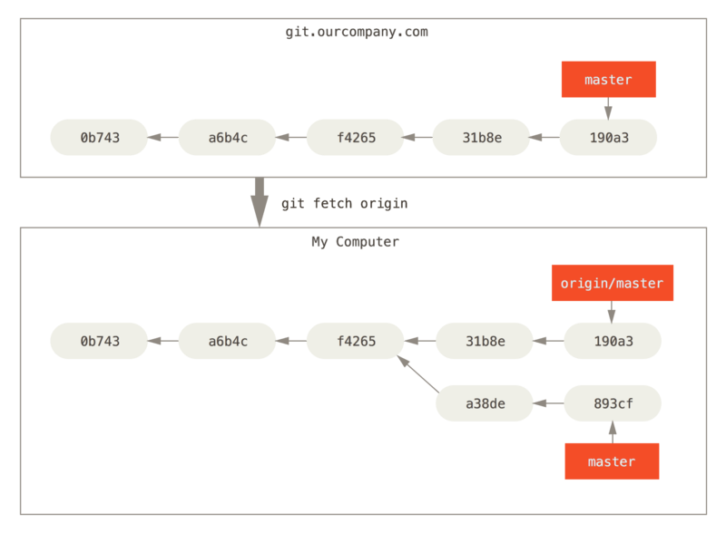

For example

A commit is a snapshot of the project at a certain point in time.
A branch is a pointer to a commit.
Each commit is stored as a file, containing a hash of the tree for the top-level directory, hash of the parent commit, and meta-information about the commit.
By default, a commit has as its parent the commit that HEAD was pointing to when you made the commit.
Setup:
You have a branching commit history
You want to incorporate changes made in two different branches
Solutions:
Merge: Make a new commit with two parents
Rebase: Applies changes from one branch onto another
Setup: We have two commits, branch1 and
branch2, and branch1 is an ancestor of
branch2.
We would like to update so that branch1 points to the
same commit as branch2.
Solution: fast-forward merge
git checkout branch1
git merge branch2What happens?
branch1 moves to point to the same commit as
branch2
After running
$ git checkout master
$ git merge hotfix
Updating f42c576..3a0874c
Fast-forward
index.html | 2 ++
1 file changed, 2 insertions(+)
Setup: We have a diverged work history with branch1 and
branch2.
We want to integrate the changes represented by both branches.
We can merge the two branches:
git checkout branch1
git merge branch2What happens?
Find the most recent common ancestor of branch1 and
branch2
Find all the differences between branch2 and the
most recent common ancestor
Apply those changes to branch1 to get a new
commit
The new commit is special in that it has two parents: the commit
that branch1 was pointing to and the commit that
branch2 was pointing to.
Starting out:

How we want the merge to look:

After running
git checkout master
git merge iss53
Sometimes merging doesn’t work automatically, usually because you made different changes to the same file on different branches.
If this happens, you’ll get a message telling you that the merge can’t be performed automatically:
$ git merge iss53
Auto-merging index.html
CONFLICT (content): Merge conflict in index.html
Automatic merge failed; fix conflicts and then commit the result.If you run git status, you get instructions about what
to do:
$ git status
On branch master
You have unmerged paths.
(fix conflicts and run "git commit")
Unmerged paths:
(use "git add <file>..." to mark resolution)
both modified: index.html
no changes added to commit (use "git add" and/or "git commit -a")In this case, the file index.html will contain a section
that looks like this:
<<<<<<< HEAD:index.html
<div id="footer">contact : email.support@github.com</div>
=======
<div id="footer">
please contact us at support@github.com
</div>
>>>>>>> iss53:index.htmlThe version in HEAD is in the first section (between
<<< and ===), and the version in
iss53 is in the second section (between ===
and >>>).
Git doesn’t know which changes you want in the final merge, so you have to choose which one to keep (or do something else entirely).
Resolving the conflict:
Edit the file(s) with the merge conflicts.
Run git add on those files.
Run git commit to make the merge commit.
After fixing merge conflicts and running git add
index.html:
$ git status
On branch master
All conflicts fixed but you are still merging.
(use "git commit" to conclude merge)
Changes to be committed:
modified: index.htmlSetup: We have a diverged work history with branch1 and
branch2.
We want to integrate the changes represented by both branches.
One solution is rebasing branch2 onto
branch1:
git checkout branch2
git rebase branch1What happens?
Find the most recent common ancestor of branch1 and
branch2
Find all the differences between branch2 and the
most recent common ancestor
Apply those changes to branch1 to get the new
commit
Same result as what we would get from a merge commit, but the history is different.
Starting out:

After running:
git checkout experiment
git rebase master
After running:
git checkout master
git merge experiment
A remote repository is a version of the project that is hosted somewhere else (e.g. GitHub).
Just like your local repository, the remote repository is a collection of commits and branches.
Reading from and writing to remote repositories is how people collaborate on projects with git.
You can have more than one remote repository for a project.
Main issues in working with remotes are reading and writing commits and branches, and being able to refer to branches on the remote.
We will have a lot of different kinds of branches:
To see the remote servers corresponding to your project that you have
set up, use git remote, or git remote -v.
For example:
$ git clone https://github.com/schacon/ticgit
Cloning into 'ticgit'...
remote: Reusing existing pack: 1857, done.
remote: Total 1857 (delta 0), reused 0 (delta 0)
Receiving objects: 100% (1857/1857), 374.35 KiB | 268.00 KiB/s, done.
Resolving deltas: 100% (772/772), done.
Checking connectivity... done.
$ cd ticgit
$ git remote
origin$ git remote -v
origin https://github.com/schacon/ticgit (fetch)
origin https://github.com/schacon/ticgit (push)If you had multiple remotes, you might get something like this:
$ cd grit
$ git remote -v
bakkdoor https://github.com/bakkdoor/grit (fetch)
bakkdoor https://github.com/bakkdoor/grit (push)
cho45 https://github.com/cho45/grit (fetch)
cho45 https://github.com/cho45/grit (push)
defunkt https://github.com/defunkt/grit (fetch)
defunkt https://github.com/defunkt/grit (push)
koke git://github.com/koke/grit.git (fetch)
koke git://github.com/koke/grit.git (push)
origin git@github.com:mojombo/grit.git (fetch)
origin git@github.com:mojombo/grit.git (push)With git clone:
By default, if you run git clone <url>, git
will add <url> as a remote repository with the name
origin.
Nothing special about the name origin
With git remote add:
git remote add <shortname> <url> will add
<url> as a remote repository with the name
<shortname>To get new commits that have been added to a remote repository, run
git fetch <remote>
What happens?
Any commits that are on <remote> that you
don’t have are downloaded and added to your repository.
Remote-tracking branches are updated



Problem: how do we refer to branches in the remote? There’s nothing preventing the remote from having branches with the same name as our local branches but that point to different commits.
Solution: remote-tracking branches:
Have names of the form
<remote>/<branch-name>.
You can’t modify these, they refer to a branch in the remote repository.
If you want more information about a remote, you can use git
remote show <remote-name>.
For example:
$ git remote show origin
* remote origin
Fetch URL: https://github.com/schacon/ticgit
Push URL: https://github.com/schacon/ticgit
HEAD branch: master
Remote branches:
master tracked
dev-branch tracked
Local branch configured for 'git pull':
master merges with remote master
Local ref configured for 'git push':
master pushes to master (up to date)A more complicated example:
$ git remote show origin
* remote origin
URL: https://github.com/my-org/complex-project
Fetch URL: https://github.com/my-org/complex-project
Push URL: https://github.com/my-org/complex-project
HEAD branch: master
Remote branches:
master tracked
dev-branch tracked
markdown-strip tracked
issue-43 new (next fetch will store in remotes/origin)
issue-45 new (next fetch will store in remotes/origin)
refs/remotes/origin/issue-11 stale (use 'git remote prune' to remove)
Local branches configured for 'git pull':
dev-branch merges with remote dev-branch
master merges with remote master
Local refs configured for 'git push':
dev-branch pushes to dev-branch (up to date)
markdown-strip pushes to markdown-strip (up to date)
master pushes to master (up to date)Tracking branches: not the same as remote-tracking branches
A local branch that has a relationship with a remote-tracking branch.
The branch it tracks is called the ‘upstream’.
When/how are they created?
By default, all of the branches in the remote repository will be
available to you with names
<remote>/<branch-name>.
Also by default, when you clone a repository, git will
automatically create a branch master that tracks
origin/master.
If you want to track other remote branches, you can use git
checkout -b <branch> <remote>/<branch> or
git checkout --track <remote>/<branch-name>,
which will create a local branch called <branch-name>
that tracks <remote>/<branch-name>.
What are they for?
Setting defaults for pushing
Setting defaults for pulling
Method 1: Explicitly naming the local and remote branches
git push
<local-branch-name>:<remote-branch-name> will push
the commits in <local-branch-name>to
<remote>/<remote-branch-name>
Take my local branch <local-branch-name> and
make it the remote’s branch
<remote-branch-name>
You can use shorthands: if the two branches have the same name,
can just use git push <branch-name>.
Method 2: If you are on a tracking branch
Can use git push with no extra arguments
This is equivalent to pushing the tracking branch you are currently on to the tracking branch’s upstream branch in the remote
Note:
This only works if nobody has pushed to the branch you’re pushing to since you last fetched from the remote.
If someone else has pushed in the meantime, you need to fetch their commits and integrate their work with yours (by e.g. merging or rebasing your commits).
Setup: You are on a tracking branch, and you want to get any new commits from the upstream branch on the remote.
You can use git pull, which is usually equivalent to
git fetch plus git merge <tracking-branch>
<remote>/<upstream>, where
<tracking-branch> is the branch that you are
currently on, and <remote>/<upstream> is the
upstream branch that your <tracking-branch>
tracks.
$ git remote show origin
* remote origin
URL: https://github.com/my-org/complex-project
Fetch URL: https://github.com/my-org/complex-project
Push URL: https://github.com/my-org/complex-project
HEAD branch: master
Remote branches:
master tracked
dev-branch tracked
markdown-strip tracked
issue-43 new (next fetch will store in remotes/origin)
issue-45 new (next fetch will store in remotes/origin)
refs/remotes/origin/issue-11 stale (use 'git remote prune' to remove)
Local branches configured for 'git pull':
dev-branch merges with remote dev-branch
master merges with remote master
Local refs configured for 'git push':
dev-branch pushes to dev-branch (up to date)
markdown-strip pushes to markdown-strip (up to date)
master pushes to master (up to date)Both local and remote repositories are just sets of commits and branches.
Primary problem is how to refer to branches in the remote.
Defaults for pushing and pulling sometimes make things confusing.